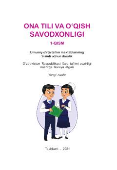

OT2-sinf oʻquvchilari uchun ona tili va oʻqish savodxonligi boʻyicha oʻquv qoʻllanma.
Ushbu darslik umumiy oʻrta taʼlim maktablarining 2-sinf oʻquvchilari uchun moʻljallangan boʻlib, ona tili va oʻqish savodxonligi koʻnikmalarini rivojlantirishga qaratilgan. Kitob Vatan, tabiat, sogʻlom turmush tarzi va kasb-hunar kabi mavzularni qamrab olgan turli mashqlar va matnlarni oʻz ichiga oladi.